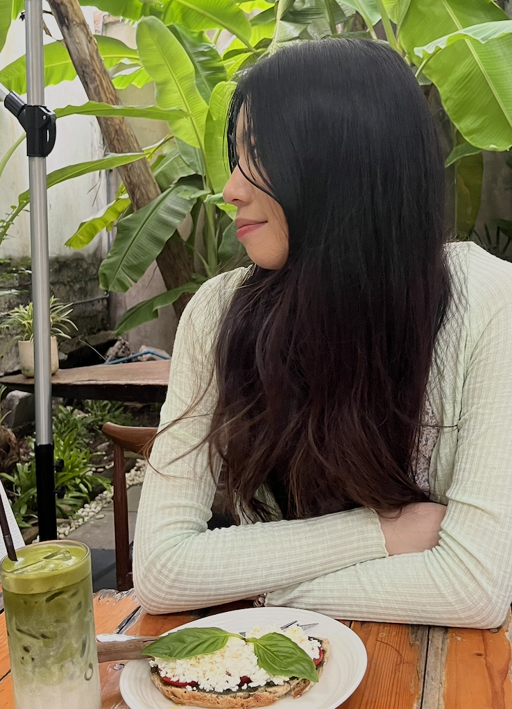
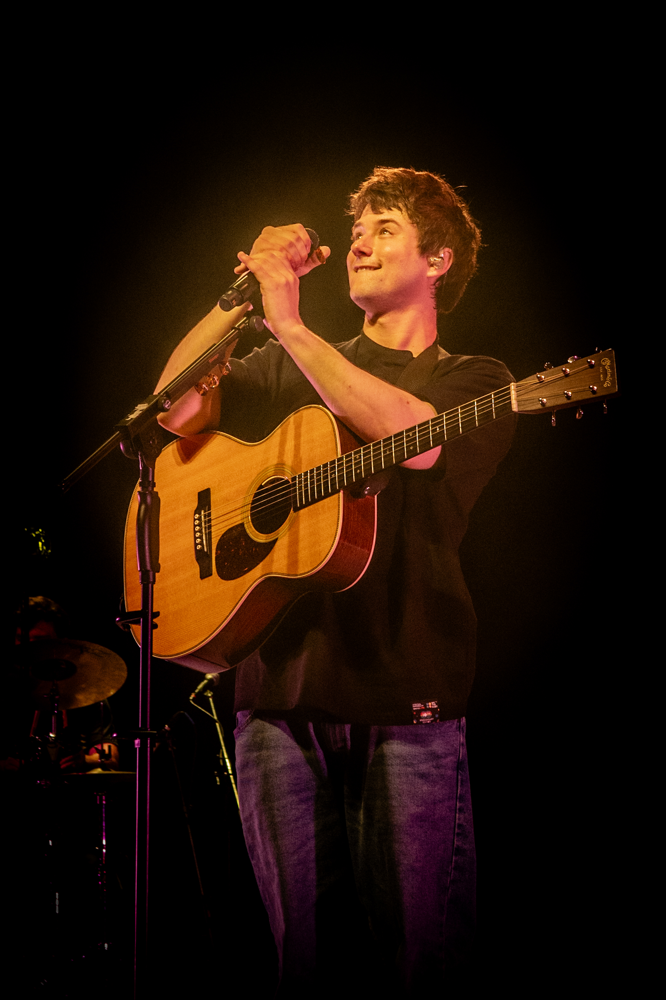
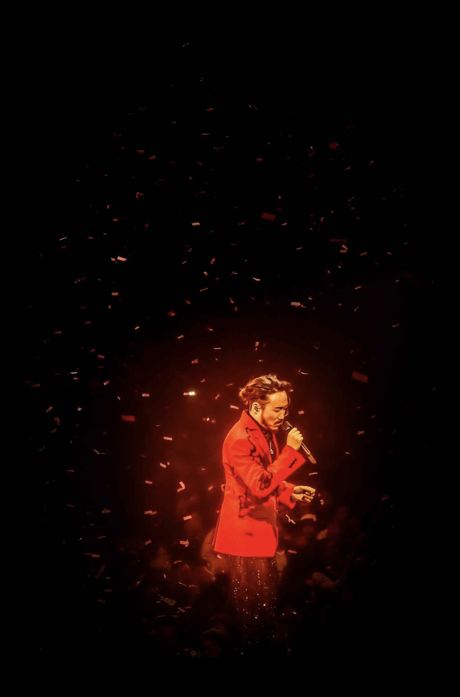
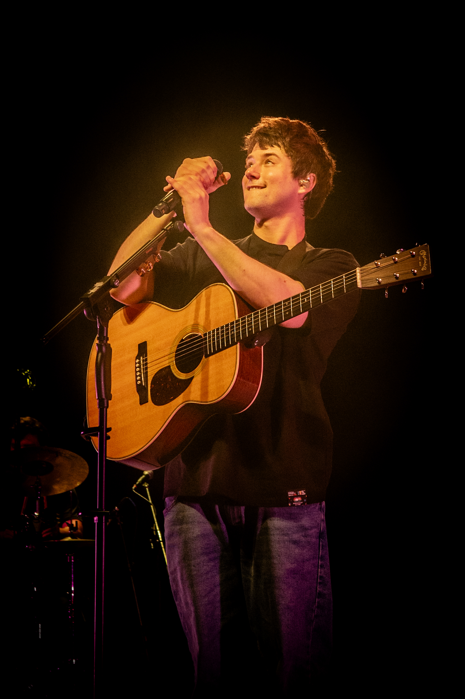
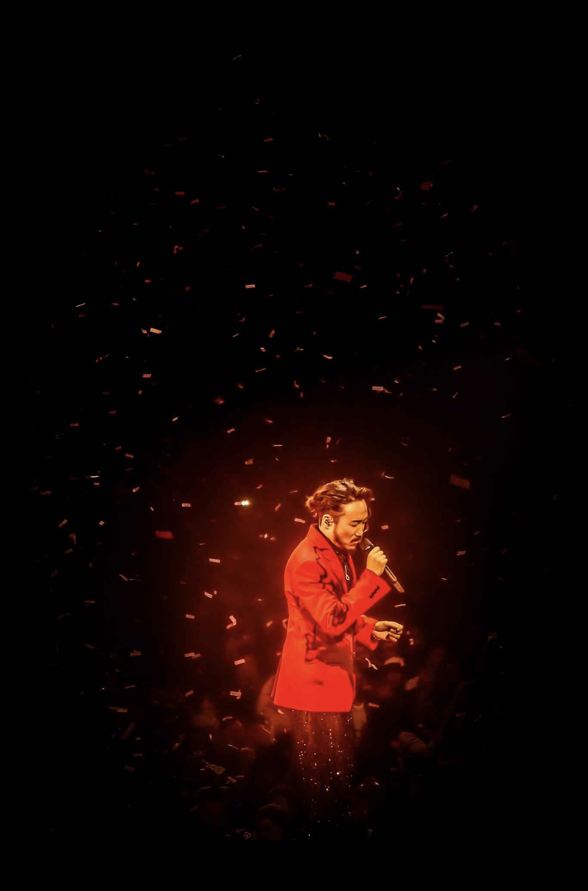

About Me
I’m a college student studying Media Production, a field I’m truly passionate about. Initially, I chose business but quickly realized it wasn’t for me. I knew I would always wonder about pursuing media, and now I can say it’s one of the best decisions I’ve made. Media fuels my imagination and self-expression, transforming my memories into captivating art. Join me in exploring my work!
Sofwares that I use





 


